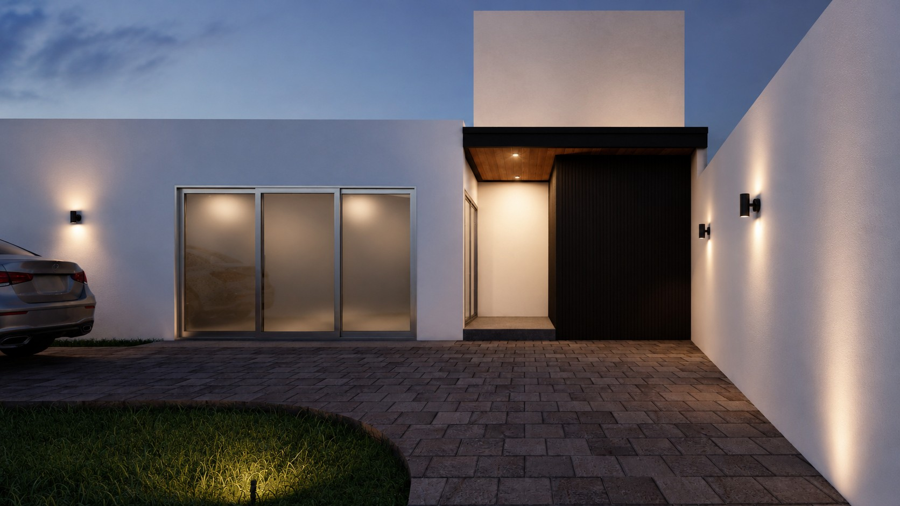

CASA 600
Casa 600 es un proyecto residencial contemporáneo con enfoque en iluminación natural y contraste en materiales. Una casa pensada para disfrutar.


Casa 600 es un proyecto residencial contemporáneo con enfoque en iluminación natural y contraste en materiales. Una casa pensada para disfrutar.
